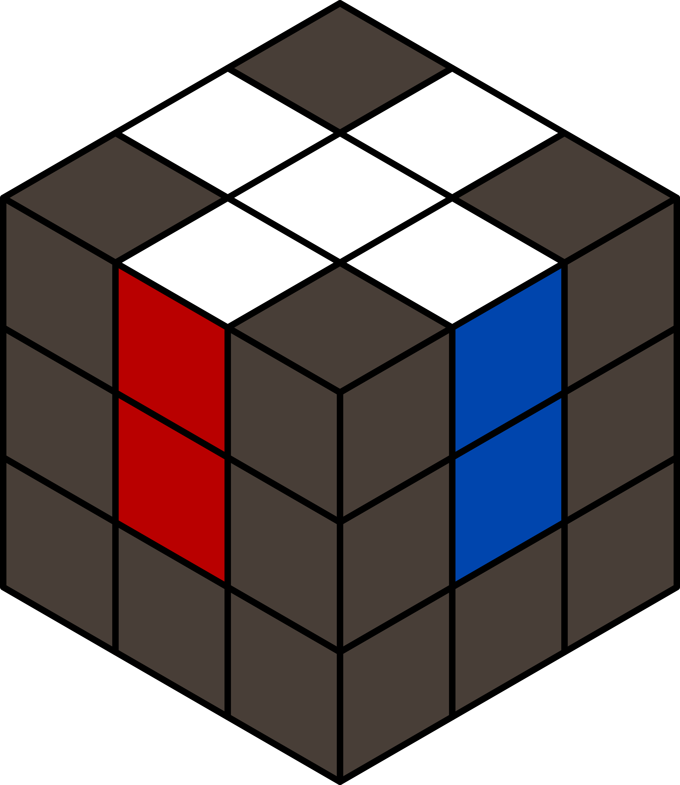

CFOP: The Cross
The first step to solve a Rubik's Cube is to get a Cross on any face, preferably the white face:

So how can you solve the Cross?
While there are several sources out there who would teach you how to solve the Cross,
it is suggested that you figure it out yourselves.
Why? Because it is an easy way for you to understand the Cube. Showing you a bunch of
algorithms to solve the Cross at this phase will not help you because it will trick you into the
habit of depending of the algorithm instead of figuring it out.
Here are our advises:
- Connect the 4 white edges to the white center one at a time.
- Be mindful of each move you make. Ask yourselves questions:
- What is my goal?
- Where will this piece go if I make this move?
- Will this move break any edge that I have connected before?
- Sometimes, it is easier to break an edge that is already in place so another edge can
be connected as well.
- It is better to solve the Cross with your white face at the bottom so the transition to
F2L would be smoother.
Good Luck!
Confident with your cross-solving skill? Move on to F2L.